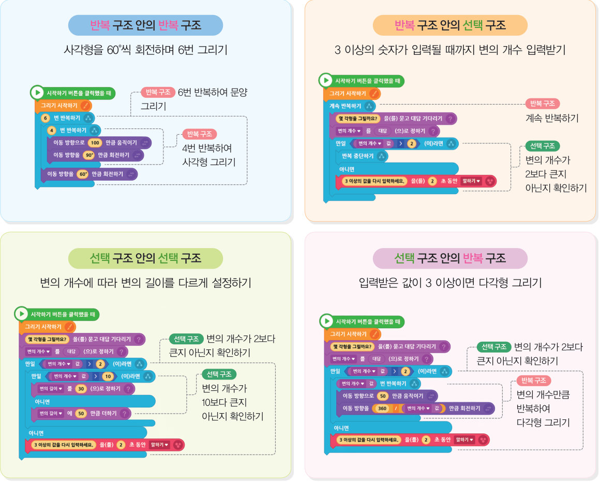
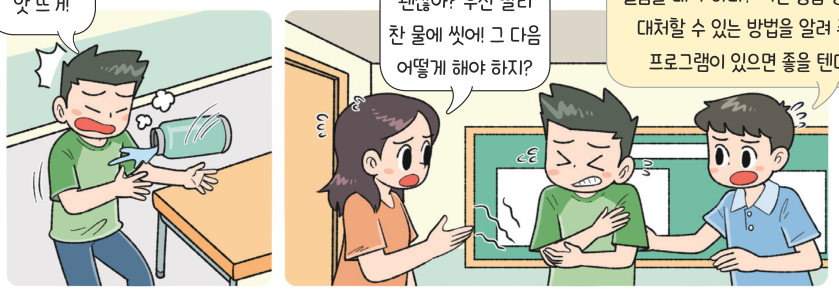

반복 속의 반복, 선택 속의 반복처럼 제어 구조 안에 또 다른 제어 구조를 넣으면 더 복잡한 일을 짧게 표현할 수 있다. 연필로 다각형을 회전시켜 문양을 그리고, 응급 처치 방법을 차례로 알려 주는 안전 지킴이를 실행해 보자.
프로그램의 실행 순서를 조절하는 구조를 제어 구조라고 한다. 제어 구조에는 순차·반복·선택 구조가 있으며, 제어 구조 속에 또 다른 제어 구조를 포함하고 있는 것을 중첩 제어 구조라고 한다.
| 사각형을 4 번 반복해 그리는 일을 60°씩 회전하며 6 번 반복한다. | |
| 계속 반복하면서 변의 개수를 입력받고, 2보다 크면 반복을 멈춘다. | |
| 변의 개수가 2보다 크면 변의 개수만큼 반복하여 다각형을 그린다. | |
| 변의 개수가 2보다 크면, 다시 10보다 큰지에 따라 변의 길이를 다르게 정한다. |
➊ 다각형의 변의 개수, 변의 길이, 회전 횟수를 입력받아 저장한다. ➋ 입력한 변의 개수가 3 이상인지, 변의 길이가 10 이상인지 확인한다. ➌ 연필 오브젝트를 누르면 입력받은 ‘변의 개수’, ‘변의 길이’, ‘회전 횟수’에 따라 문양을 그린다. ➍ 다시하기 오브젝트를 누르면 새롭게 입력받아 저장한다.

➊ 프로그램이 시작되면 안내판에 사용 방법을 알려 준다. ➋ 빨간 LED 오브젝트를 누르면 화상과 과호흡 중 입력받아 응급 처치 방법을 카운트 값을 이용하여 안내한다. ➌ 하트 오브젝트를 누르면 성인, 유아, 자동제세동기 중 입력받아 심폐소생술 방법을 카운트 값을 이용하여 안내한다. 해 보기 ➍ 불 오브젝트를 누르고 ‘소화기’ 또는 ‘소화전’을 입력하면 사용법을 안내한다.
| 빨간 LED 오브젝트를 누르고 화상이나 과호흡을 입력하면 관련된 응급 처치 방법이 안내되는가? | |
| 하트 오브젝트를 누르고 성인, 유아, 자동제세동기 중에서 입력하면 관련된 심폐소생술 방법이 안내되는가? |
| 평가 기준 | 스스로 평가 |
|---|---|
| 중첩 제어 구조의 의미를 예를 들어 설명할 수 있는가? | |
| 중첩 제어 구조를 이용하여 문양 그리기 프로그램을 작성할 수 있는가? | |
| 중첩 제어 구조를 이용하여 응급 처치 방법을 안내하는 프로그램을 작성할 수 있는가? |